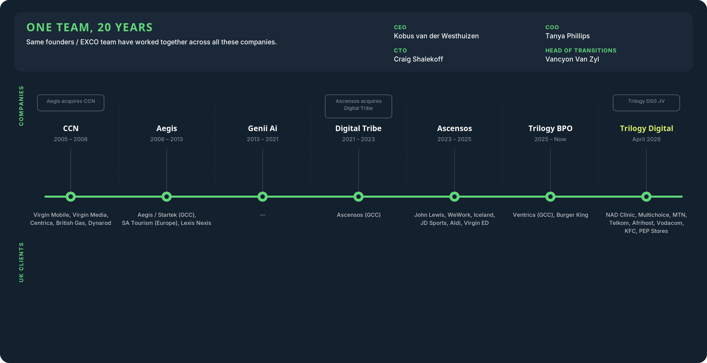
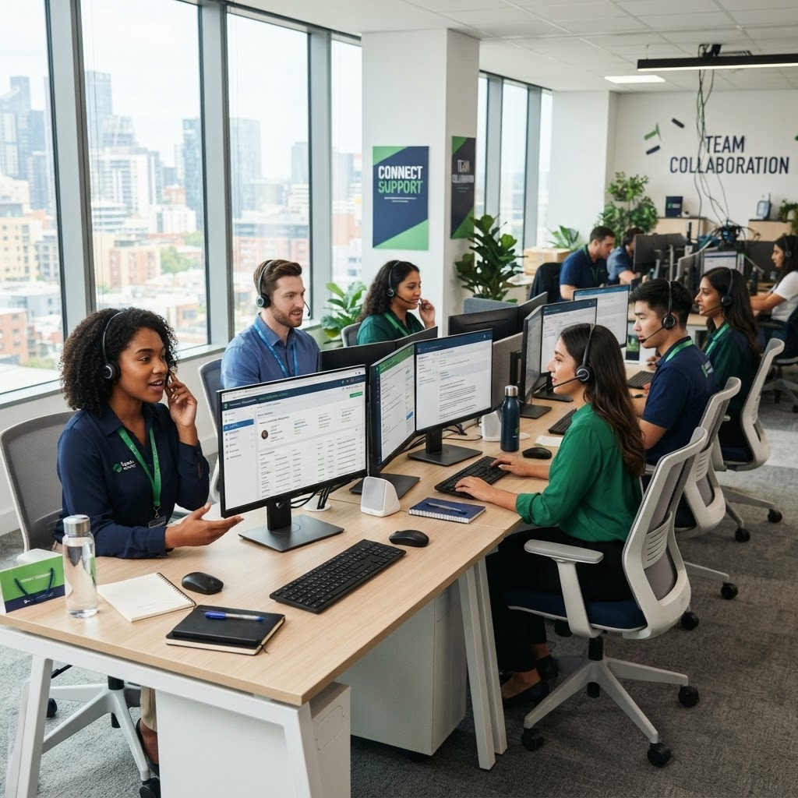
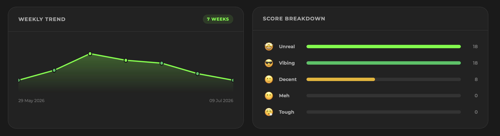
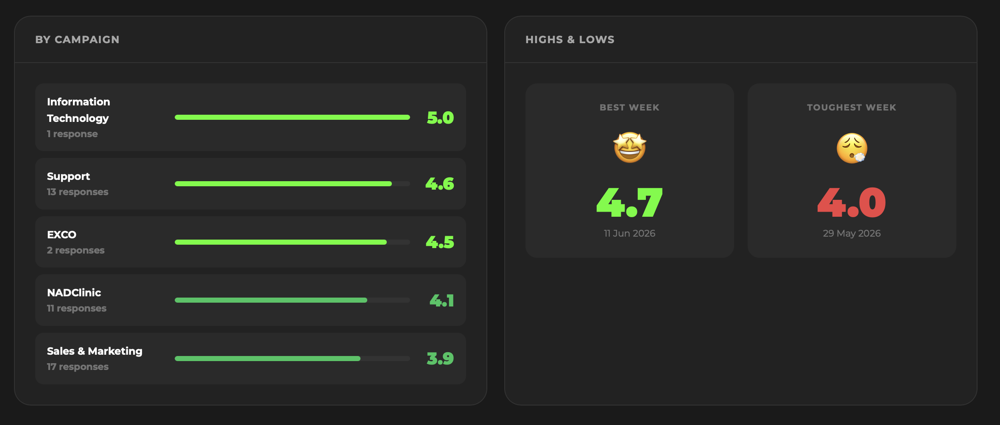
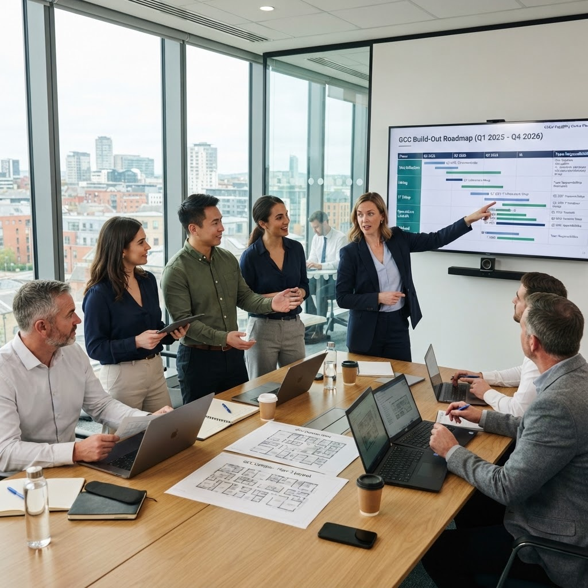
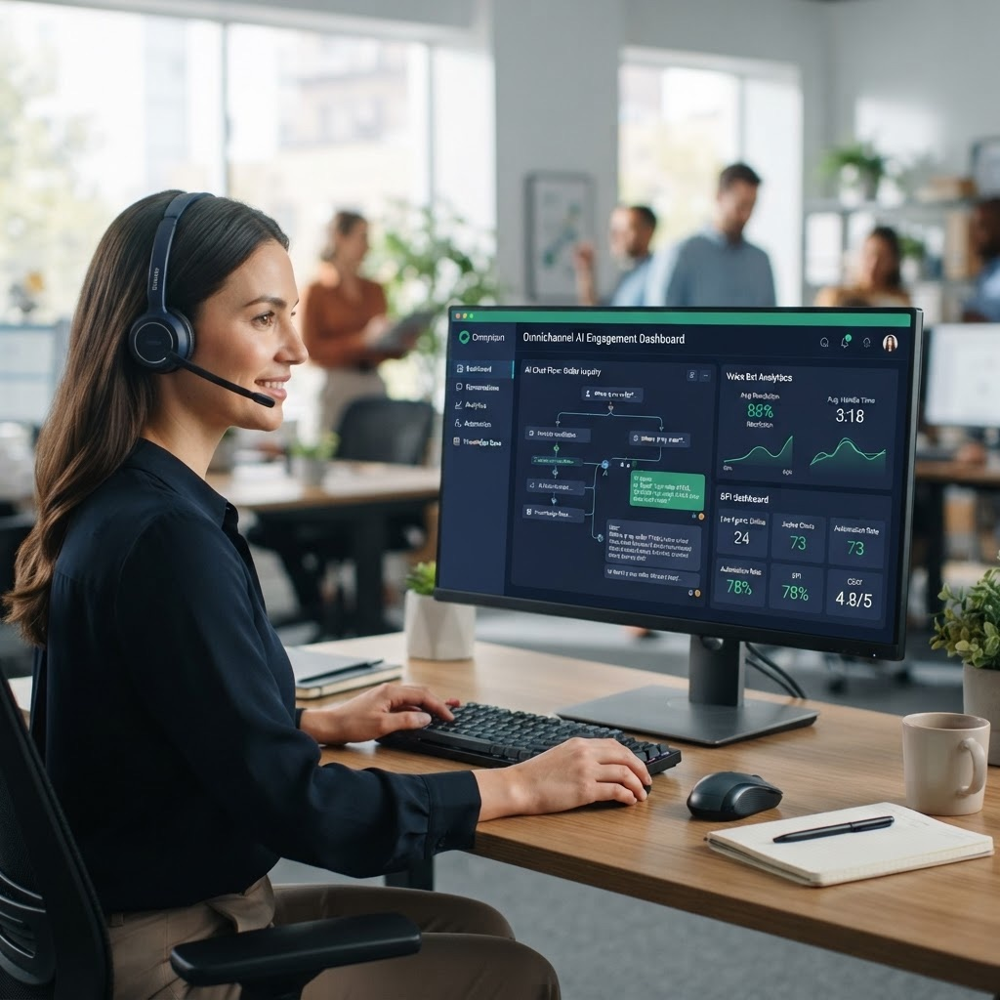
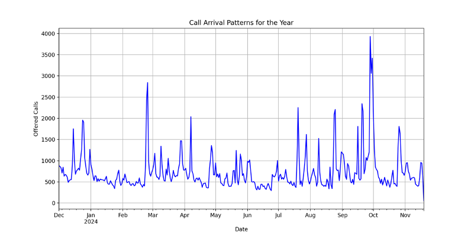
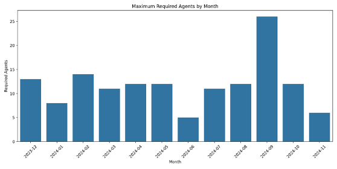
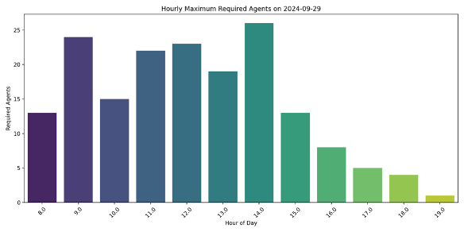
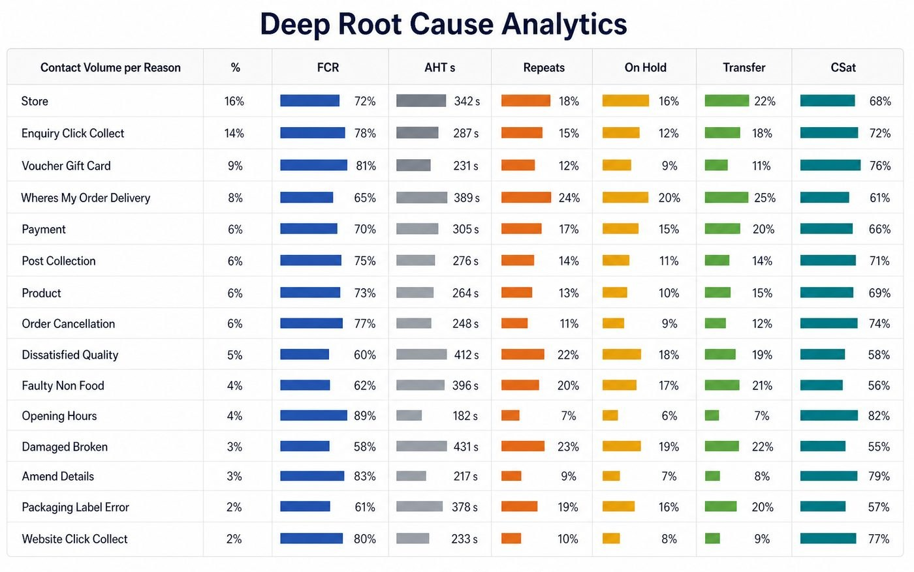

CEO & Founder
Human Led · Ai-enabled
This document is commercial-in-confidence and prepared exclusively for the recipient named above. It may not be reproduced or disclosed to third parties without the written consent of Trilogy Digital (Pty) Ltd.
Content placeholder
Adjust the sliders for your operation. Figures are illustrative annual costs based on the deck’s savings model.
Offshoring saves 40–60% versus a UK operation; a GCC structure adds a further 20–30%, and digital plus AI deflection compounds from there.
Trilogy Digital (Pty) Ltd is a purpose-built customer experience (CX) joint venture between Trilogy BPO and CXG, operating as a single integrated entity and now a Trilogy Group company. The partnership marries CXG's 27-year operational tenure and scale within the South African market to Trilogy's deep expertise in managing UK campaigns and delivering advanced digital and AI capabilities.
The combined leadership team brings over 25 years of industry expertise, having previously established and successfully exited two major BPOs. Over their careers they have managed more than 36 contact centre operations, scaled over 10,000 seats globally, and delivered CX programmes for brands including John Lewis & Partners, British Gas, Vodafone UK, Aldi UK, and Virgin.
Today, Trilogy Digital deploys over 1,000 CX specialists across five operational sites in South Africa, anchored by its flagship campus at Mutual Park in Cape Town. Despite this scale, Trilogy Digital remains an owner-led, high-touch business — focused on being responsive.
Owner-led and privately owned. Brings deep UK campaign management experience and advanced digital and AI capability.
27 years of operational tenure and scale within the South African contact centre market.


Trilogy Digital's footprint has more than 1,000 FTEs across Cape Town, Johannesburg, with the majority in Cape Town, across two sites. Every site is Trilogy Digital owned or leased and operated directly, never via franchise or affiliate. This offers an advantage where your current operation is in Cape Town. Your operation will fit seamlessly into our current operations, offering stability and risk mitigation associated with a new site.
| Site | Status | Scale |
|---|---|---|
| Mutual Park, Cape Town | Active, primary UK-client site | 5-star green-energy campus; scalable to 1,000+ seats |
| Century City, Cape Town | Active | 150+ FTE; scalable to 300 within 24 months |
| Rosebank Quarters, Johannesburg | Active | 200+ FTE; scalable to 400 within 24 months |
| Maharishi Institute, Johannesburg | Active | 100+ FTE; 750+ pre-assessed graduate pipeline per year |
| National WFH continuity layer | Active | 40–60% cloud-first from home for flex & BCP |
Our leadership team has transferred, deployed and managed multiple operations in Cape Town, South Africa from inception. We also provided CX programmes for globally recognised UK brands including John Lewis & Partners, British Gas, Vodafone UK and Aldi UK. Our operational and HR (People) experience is aligned with your UK and US requirements.
All our lessons learnt during these transitions, including job profiling, recruitment strategies and transferring of knowledge, provide us with a unique opportunity to leverage this experience and position ourselves as your ideal partner of choice.
We understand the importance of retaining competence and tenured staff and key individuals, including those in positions of operational leadership. We know our ways of working to be effective in delivering a tangible employee value proposition and believe our ways of working, including our core values, are closely aligned to those of your business. The investment made to date will not be lost, as we have significant experience in transitioning work between operators and core expertise in managing the change associated with the change of employer as a going concern.

We feel confident that together we can transition the existing operation effectively, minimise risk and craft a long-term delivery strategy focused on elevating your customer experience, leveraging AI where appropriate, and building a partnership that creates true bi-directional value for both parties.
Content placeholder
While we operate at 1,000+ FTE in aggregate, our model is deliberately built to run focused, boutique pods with senior attention. We ideally stand up smaller (20–80) dedicated teams with its own Operations Manager, Team Leaders, Product Specialist / trainer and account management rather than absorbing you into a shared pool of resources. We have repeatedly launched and scaled teams of this size, including recently launching a global BPO's first 100 seats in six weeks before scaling to 1,000+. Named, comparably sized references can be shared under mutual NDA.
25 years behind the world's brands.
Over the past 25 years, Trilogy's leadership has managed over 30 contact centres for some of the world's most recognised brands. That gives us insight into the challenges and opportunities of offshore customer-service delivery, with deep vertical expertise across telecommunications, utilities, retail, fast food, insurance and technology.


The operations will be managed from our Pinelands site in Cape Town. Trilogy will deploy the exact same operational structure as your current operations. We are however recommending the addition of a dedicated product specialist/trainer to the team to support ongoing product, process and system training, along with any new-hire and ramp training requirements.
Tanya Phillips, our COO, will be the executive lead, supported by Vancyon van Zyl, who is Director of Transitions and Operations, and Rudi Jansen, our Chief People Officer. The dedicated Operations Manager will own the day-to-day performance, and a Key Account Manager will be responsible for owning the strategic, commercial relationship and roadmap. Key Account management will be provided by a UK-based senior Account Manager. The CEO and COO participate directly in your monthly and quarterly business reviews and will participate in your strategy sessions as and when required.
Your team will have direct contact both for any discussions or escalations.
Our people are our differentiator.


At Trilogy, how we attract, source, onboard and retain talent is our secret sauce. Our people processes are built to support the full employee lifecycle — from candidate to top performer — with our culture and our approach to Diversity, Equity & Inclusion embraced at every stage rather than bolted on as a standalone policy.
Campaign-driven, mobile-first sourcing with unique links and QR codes per line of business.
AI-enhanced behavioural and CEFR language assessment; automated, bias-reduced shortlisting.
Zero re-keying handover into a single digital employee file; pre-boarding to 90-day journey.
Role-specific LMS pathways with randomised assessments and operational-readiness sign-off.
Continuous, data-led development and a clear path from advisor to team leader and beyond.
Coaching cadence and QA-driven refreshers keep capability ahead of account demands.
Quality insights, assessment results and performance trends shape what we train, and when.
Structured exit process, insight loop and alumni/rehire approach that feeds retention.
Skills needs analysis & job profile; customized recruitment plan; talent sourcing via partners, advertising, referrals, WOLC and campaigns.
Assessment & selection; screening; competency-based interviews; outcomes-based assessments.
Reference & integrity checks; shortlist & compliance report; client acceptance interviews; hiring.

Our recruitment engine runs as a single automated pipeline — from first application to Day 1 handover — with POPIA-compliant consent, automated assessment and zero re-keying into the digital employee file. Every step is communicated to candidates via email and WhatsApp in parallel.
Campaign-specific link/QR code; mobile application, ID/CV/selfie upload, POPIA consent captured
Personal details and Employment Equity data captured and auto-classified for reporting
Role-specific, objective online assessment triggered automatically; results scored and shortlisted against role thresholds
Recruiter reviews ranked shortlist; candidate self-books a face-to-face interview; joint HR + Operations decision
Background verification triggered on verbal offer; banking, tax and next-of-kin details completed via secure portal
All data consolidated into one digital record; contract and offer letter auto-populated and e-signed
Approved employee file pushed automatically to onboarding — zero re-keying, candidate welcomed with start date confirmed
The typical Trilogy Digital UK-facing agent is an English-first South African professional aged 22–35 — digitally native, highly empathetic, and culturally attuned to UK consumer expectations before a single day of induction. Educational backgrounds span NSC (Matric) through to tertiary degrees, typically with 1–3 years of prior customer-facing experience.
Training runs as a continuous, SAQA/NQF-aligned cycle — strategic planning, coaching and gap analysis, curriculum development, workshop/OJT/coaching and verification — underpinned by quality and performance management.
SAQA / NQF aligned · continuous improvement
A continuous cycle — verification insights feed straight back into strategic planning, so every cohort sharpens the next.
Every agent deployed on a UK mandate completes a UK Cultural Immersion programme before going live, covering UK consumer psychology, regional geography and idioms, brand-specific tone of voice, the UK seasonal/holiday calendar, and the regulatory environment relevant to the programme (e.g. Ofwat, Ofgem, FCA, Ofcom, Consumer Rights Act).
| Role | Typical tenure |
|---|---|
| Customer Service Agent | 18–30 months — above sector average |
| Senior / Specialist Agent | 24–36 months, with funded external qualifications |
| Team Leader | 3+ years; >60% promoted internally |
| Quality Analyst | 2–4 years, typically developed internally |
Industry average monthly attrition sits between 9–12%; our team has maintained 3–4% monthly attrition. Full attrition data by site and role is provided under NDA at RFP stage.
We grow leaders at every level through a staged programme matched to leadership level — from Emerging Leaders (the inner game of leadership), to Leading Others (the bridge to leadership), to Leading of Leaders (strategic leadership at scale).
Our EVP rests on a simple idea: look after our people, and strong performance follows. It runs through six pillars across the employee lifecycle.
Market-benchmarked pay per role and line of business, plus monthly performance bonuses.
Medical insurance, transport and meal allowances, funeral/life cover and staff discounts.
On-site counsellors and a culture that genuinely supports mental and physical health.
DE&I woven through how we lead, our policies and our culture — every voice belongs here.
We grow leaders at every level via Trilogy’s structured leadership pathway.
Monthly recognition, spot bonuses, fun days, lunches and team building.
Wellbeing is not an add-on — it is embedded into how we run operations. We partner with Soul Impact, a specialist provider of onsite, trauma-informed mental health support built for the contact centre industry, giving every employee direct, confidential access to professional counselling as part of their working life.
LifeLine-accredited trauma counsellors deliver crisis counselling, impact counselling and coaching in confidential 50-minute sessions — onsite or virtual, booked via a simple QR code. A wellbeing session is embedded into induction, so every new starter knows the support exists from Day 1.
#VibeCheck — every week we run an anonymous employee-satisfaction pulse. Each person rates their week across five mood measures, from “Tough” to “Unreal,” and can add their own words. It gives us an honest, ongoing read on morale — and a steady signal of what we are getting right and what we can do better.


Culture is the difference between a documented procedure and a team that actually lives it. At Trilogy, every person matters and every voice counts — we lead with respect, care and empathy. Everything we stand for is captured in a single word: CRAFT.
Our clients come first. We anticipate their needs and exceed expectations, every time.
Good enough is never the goal. We deliver the best, every time.
We win together. There is no “my success” — only ours.
We take the work seriously. Not ourselves.
We do what we say. We show up. Trust is earned here.
Your brand values, tone and ways of working embedded into induction from Day 1.
Calibration sessions with your leadership to align on culture, standards and expectations.
Co-branded recognition programmes and your branding visible across the site.
Nominated champions who carry and reinforce your brand across every team.
Human Empathy, with AI Efficiency.
We are a premium (boutique) customer service, back-office and tech-support BPO partner — enterprise-ready and AI-enabled. We are not a commodity offshore provider. We are a high-quality, owner-led, high-touch delivery partner that competes on quality first and cost second, with the scale, technology depth and client portfolio to prove it.
In practical terms: 40–60% below UK onshore delivery costs; higher CSAT than comparable offshore markets; an active AI toolset deployed in production (not in planning); and a leadership team with 25+ years of UK-market experience who are personally accountable for every programme.
| Differentiator | What it means for you |
|---|---|
| Proprietary AI built in-house | We do not white-label third-party AI; our platform represents 8 years of in-house AI/ML development. |
| “Test Kitchen” model | A dedicated innovation hub that designs, tests and deploys new AI and digital capabilities in a sandbox without disrupting BAU operations. |
| Outcome-aligned commercial models | Including our Value Creation Model (VCM), which ties commercial success to client outcomes, retention and CX uplift. |
| Agnostic technology approach | We are equally comfortable operating within client-owned platforms or deploying our own; we do not force platform migration. |
Two decades of consistent excellence in the BPO industry has positioned Trilogy as a trusted partner for global brands. Our track record speaks to our ability to deliver results at scale while maintaining the highest standards of quality and innovation.
Our team has created 45,000 jobs over the past 20 years, making a significant positive impact on South Africa’s economy and communities.
Two decades of proven track record in providing exceptional value to our customers across multiple industries and geographies.
Eight years of experience developing AI and Machine Learning platforms, analytics solutions, and digital automation tools.
Successfully built and launched 36 contact centres for blue chip companies in South Africa over 20 years.
Our largest local competitors include Merchants, Concentrix, Teleperformance SA and Sigma Connected. Trilogy Digital is differentiated on four structural grounds:
South Africa has consistently been ranked the second most attractive Business Process Outsourcing location globally, after consecutive years of high performance. Source: McKinsey.
South Africa — and Cape Town in particular — is one of the world's premier destinations for UK-facing customer experience delivery. It combines deep English-language and UK cultural alignment, a mature BPO ecosystem, favourable time zones and compelling cost advantages, all without the quality trade-offs associated with other offshore markets.
Your Journey — Your Choice.
However you want to transform your customer experience, there is a Trilogy route to get you there — from a fully managed outsourced operation, to building your own capability centre in South Africa, to licensing our AI platform into your existing environment. Our journey moves from Voice, to Digital, to Autonomous CX, and you choose where on that journey you start.
From Voice, to Digital, to Autonomous CX. Accelerate your digital customer engagement by outsourcing to a partner with every technology platform ready for deployment — a turnkey digital contact centre and one of the first fully autonomous customer engagement solutions.

We help international BPOs and enterprises establish high-performance Global Capability Centres in South Africa using our proven DBIT methodology: Design, Build, Innovate & Transfer — fast, compliant and low-risk offshore delivery you ultimately own.

One of the first proven digital and autonomous customer engagement platforms for sales, service, marketing, collections and retention — already live with multiple clients seeing higher conversion and measurable efficiencies.
| Tier | Scope | Target SLA |
|---|---|---|
| L1 | First-line triage, FAQ resolution, account queries, standard troubleshooting | FCR >70%; AHT <8 min |
| L2 | Specialist diagnosis, configuration, advanced troubleshooting, billing disputes | FCR >85%; AHT <15 min |
| L3 | Engineering escalation, known-fault tracking, outage notification management | Acknowledge <30 min |
Over the past 20 years, the Trilogy Digital team has built and managed more than 50 contact and back-office centres across multiple verticals.
| Sector | Scale / Clients | Services delivered |
|---|---|---|
| Logistics / Parcel | 1 active client across a 2,700-store network | Multichannel parcel tracking, failed-delivery resolution, USSD & WhatsApp contact, refund processing |
| Telecoms / Broadband | 5 active clients; 1,000,000+ subscribers | Multichannel technical support, churn prevention, billing back-office |
| Retail / E-commerce | 2 current, 6 previous (John Lewis, Aldi UK, Iceland, JD Sports, KFC, Nando’s) | End-to-end CX, order management, service recovery, AI-driven WhatsApp service |
| Utilities | 1 current, 1 previous (British Gas) | Customer service, billing disputes, regulated complaints management |
| Medical / Wellness | 1 current client | UK wellness-sector customer service |
| B2B Services | Multiple | 24/7 ITIL 4-aligned helpdesks, account management, S-NOC capability |
Own Your Offshore Operation — Offshoring Without the BPO Tax.
For organisations seeking maximum control and long-term cost optimisation, building your own capability centre in South Africa represents the ultimate strategic move. With Trilogy's DBIT methodology, you can establish a fully operational centre with confidence, backed by our decades of local-market expertise.
Global Capability Centres provide 20–30% cost savings compared to traditional outsourcing while giving you complete ownership and control over operations, technology choices and strategic direction. We handle the complexity of setup, compliance and local regulations so you can focus on growing your business.
The traditional BPO model contains a structural flaw: providers earn margin based on headcount. Every agent represents recurring revenue, so when automation reduces staff requirements it directly reduces the provider's income. This creates a powerful disincentive to innovate — BPOs are economically motivated to maintain, not reduce, your agent count.
A further barrier lies between the company's in-house IT systems and security protocols and a BPO trying to access those systems — historically a blocker to RPA, innovation and technology integration. Migrating your offshore BPO operation to an offshore captive unlocks this further cost-reduction opportunity and removes the barriers to innovation.
Trilogy enables you to own your offshore operation outright. This isn't traditional outsourcing — it's a structured pathway to building and controlling your own Global Capability Centre in South Africa, with aligned incentives from day one.
Your employees work for your entity, following your culture, processes and standards — complete operational control without vendor intermediation.
Full transparency into every operating expense. No hidden markups, no black-box pricing — you see exactly where every rand is spent.
Our compensation is decoupled from headcount. We earn the same whether you run 100 agents or 50 — so we are incentivised to help you optimise.
Every efficiency improvement, automation win and headcount reduction flows directly to your bottom line, not a vendor’s margin.
Your brand, your customer relationships, your service standards.
Meeting or exceeding your current service-level agreements.
Fewer people, lower cost, full control.
Building your own capability centre through DBIT delivers advantages across multiple dimensions — beyond cost savings, you gain strategic control, operational flexibility and the freedom to innovate without constraints.
Achieve 50–60% cost savings compared to maintaining operations in high-cost markets while accessing the same quality talent and capabilities.
Global Capability Centres provide 20–30% additional savings compared to traditional BPO outsourcing by eliminating vendor margins and overhead.
Implement aggressive automation, digital deflection and AI strategies without restrictions, driving an additional 15–20% cost reduction over time.
Maintain complete ownership and control over operations, technology decisions, data security and strategic direction — critical for long-term competitive advantage.
Evolve your model as you grow — from an outsourced operation to your own contact centre, with management control and risk mitigation at every step.
Compounding cost reduction — Lower cost, higher maturity
Midpoint model of labour arbitrage, GCC ownership and AI deflection stacking on the same cost base — from no savings to ~61%.
Each stage on the DBIT roadmap drives cost down further — starting from a 100% in-house UK/US cost base, then reducing through offshore outsourcing, owning your own centre, and AI-driven tech deflection.
Our clients typically experience a compounding effect across three value drivers. These aren't projections — they are based on realised results across our existing client base operating in South Africa.
South Africa offers political stability, a legal framework aligned with Western standards, same-day time-zone overlap with European markets, and a mature BPO talent ecosystem with strong English proficiency.
Pilot AI, automation and emerging digital tech — safely, swiftly, without disrupting live operations.
Our Digital and Autonomous Test Kitchen is an innovation framework that lets clients design, test, improve and scale AI and automation initiatives inside a controlled, operationally realistic environment. It is deliberately not a lab, not a proof-of-concept and not a vendor demo — it is operational by design, so what you validate is what you can actually deploy.
The Test Kitchen exists to fix the single biggest failure point in enterprise AI: the gap between a promising pilot and real, measurable business value. We find real automation opportunities, quantify real deflection, and deploy only what works.
Gartner finds just 30% of AI projects make it past the pilot stage to deliver real business value.
McKinsey notes that organisations which fail to link AI initiatives to measurable business outcomes struggle to scale them.
The Test Kitchen is operational by design. It combines proprietary tooling with human-in-the-loop governance from day one, so opportunities are grounded in real customer interactions rather than opinion or theory.
An LLM-based learning bot that shadows your operation and analyses real customer interactions to surface friction points and automation opportunities.
Deep root-cause analytics across voice, chat, digital and back-office — pinpointing the 20% of processes driving 80% of your costs.
Agent- and expert-in-the-loop oversight from day one keeps AI behaviour safe, compliant and quality-assured throughout every phase.
One of our key differentiators is our Test Kitchen. Our Digital and Autonomous Test Kitchen allows our clients to pilot new AI and digital technology, automated processes and other initiatives without disrupting current operations.
Pilot new AI, automation and process without disrupting live operations.
A continuous cycle, learnings from Deploy & Scale feed straight back into Design, so every initiative compounds without disrupting live service.
The Test Kitchen lets you test new AI workflows and digital technologies in a safe, parallel environment without disrupting live operations. You fail fast in isolation, learn quickly, and scale only what is proven — no over-promising, just validated outcomes.
A controlled environment where AI agents and automated processes are piloted using real-world scenarios and representative data volumes.
Demonstrating success in initial phases builds confidence and buy-in, justifying further investment and broader adoption.
Each phase receives tailored support and lessons learned are applied forward, so every subsequent rollout is stronger.
Feedback from each phase informs the next, allowing strategy and tactics to adjust as the programme progresses.
Trilogy's mission statement is to provide Human-Led, AI-enhanced solutions. This means that while we have spent over 8 years developing AI and digital automation solutions, our primary focus remains the people in our operation and how we assist them to deliver better service to their customers. Our AI solutions are geared specifically to enhancing the agent's ability to support their customers, and our systems provide support for Voice, Email, WhatsApp and almost all social media and RCS platforms.

Trilogy has two approaches to technology. Approach 1 — deploy our fully owned and managed platform, providing the end-to-end technology solution for our customers on our QContact platform. Approach 2 — operate as a technology-agnostic, client-based partner, deploying and managing within the client's own stack.
QContact is a cloud-based omnichannel customer communications platform that unifies calls, emails, WhatsApp, live chat and social media into a single interface. Founded in 2017, it provides built-in CRM functionality, case management and communication AI tools, omnichannel inbox, Communication AI (call transcriptions, conversation summaries and sentiment analysis), native WhatsApp integration and workflow automation.
Fully automated AI voice platform for inbound service and proactive outbound (services, sales, collections).
Live AI-generated response suggestions, knowledge-base access and process guidance on-screen during every contact.
After-Call Work Assistant — automates callbacks, CRM updates, document dispatch and logistics notifications.
Digital & autonomous collections — AI-driven segmentation, predictive analytics and automated recovery communication.
Real-time language translation enabling any agent to service any customer regardless of language.
People, technology, process and AI/ML analytics work as one continuous system — orchestrated for voice, digital and automation so CX outcomes compound rather than fragment.
Digital agents, management and shared services as an outsourced operation.
Leverage the technology stack to provide omnichannel customer engagement.
WhatsApp customer engagement, messaging and digital campaigns.
Customer interaction, behavioural science and next-best-action recommender platform.
Human empathy — AI accuracy. Trilogy Ai is our agentic AI capability for Autonomous Customer Engagement (ACE): fully automated platforms for sales, service, marketing, collections and retention — with or without an agent in the loop.
Automated customer engagement platforms for sales, service, marketing, collections and retentions.
Developed with South Africa’s leading machine-learning partner — production-proven, not a lab demo.
Deployed for customers already seeing returns of over 500% improvement in targeted business models.
ACE runs with or without an agent in the loop — the only fully autonomous path when the use case allows it.
Deploy AI agents that plan and execute multi-step workflows — beyond Q&A to actual problem resolution.
Instant, high-quality support across digital channels without the overhead of around-the-clock human staffing.
Anticipate needs and intent before customers express them — reactive support becomes proactive service.
Our AI doesn’t replace your best people; it makes them 10× more effective.
Conversational AI for containment, triage and self-service; smart routing and intent detection before human handoff; 24/7 availability without 24/7 staffing.
Real-time agent assist and response guidance; knowledge retrieval and summarisation; automated after-call work and case notes.
Ticket classification and prioritisation; QA automation and sentiment analysis; forecasting, demand shaping and performance insight.
AI monitors 100% of conversations for emotional cues, flagging complex or high-tension cases for immediate human intervention.
AI “listens” to live calls and feeds agents the correct scripts, knowledge articles and compliance disclosures in real time.
Every human resolution for a complex query is logged and fed back into the AI, making the system smarter with every interaction.
Mandatory Human Override protocols — AI never makes final decisions on sensitive matters without human validation.
By automating 70–80% of repetitive, low-value queries, we free human experts for high-value interactions where empathy and complex problem-solving are non-negotiable.
Built without operational ownership · disconnected from live CX workflows · no governance, escalation or human override · over-promised ROI · data privacy gaps · legacy integration challenges.
AI deployed inside BPO and GCC operations · real agents, real customers, real constraints · continuous optimisation · outcome-aligned commercials · GDPR/POPIA-compliant SLMs · leading South African integration partners.
Independent industry benchmarks reinforce the impact of a human-led, AI-enabled model. The following are representative outcomes achievable across an asynchronous customer operation like yours.
Organisations using AI report up to a 27% reduction in Average Handle Time.
AI-led outreach outperforms traditional methods by 20% in sales and collections.
Businesses using AI-driven sentiment analysis report a 35% increase in CSAT.
AI identifies at-risk customers with 90% accuracy for proactive intervention.
Achieve 100% Quality Assurance (QA) coverage by using AI to audit every single conversation for legal compliance and brand standards.
Companies using AI-driven sentiment analysis can increase long-term customer lifetime value (LTV) by 15–20% through proactive intervention.
“95% of decision-makers already using AI report immediate cost and time savings… while AI-powered predictive analytics can drive a 25% increase in recovery rates for outbound functions.”
— Salesforce / NobelBiz (2025/2026). Source: Salesforce: What is an AI Contact Center?Meta marketing & sales platform that converts Facebook advertisements and “likes” directly into sales.
Intelligent recruitment & onboarding — excite, inform and screen at scale with automated hiring workflows.
We have active integration experience with Microsoft Dynamics 365, HubSpot, Salesforce Service Cloud and Zendesk, with standard deployment timelines of 3–4 weeks via pre-built connectors. Custom REST/SOAP integration is available for legacy or bespoke systems. Integration delivery is supported by our partners IQX (South Africa) and BBD (UK, 800+ engineers, 47 years in business).
Our environment is cloud-hosted (Microsoft Azure where applicable), with data residency options aligned to the client's regulatory jurisdiction. Standard resilience features include multiple fibre providers per site with automatic failover, secondary radio/LTE, N+1 generator and UPS power, and biometric physical access control.
A live example of human-led, AI-enabled service: the assistant resolves a billing query end-to-end while a human agent reviews and approves each action — resolved in seconds with a perfect CSAT score.
Traditional cold calling and abusive outbound canvassing are under pressure everywhere — commercially and regulatorily. Contact rates fall, brand risk rises, and sales teams burn capacity on low-intent lists. The shift clients need is clear: stop chasing cold contacts and start speaking to people who have already asked to be called.
Visibilitie was built for that pivot. Their platform replaces cold outreach with consented, intent-based leads — prospects who discover an offer on social video, engage with an AI conversation, and explicitly request a callback.
Through Trilogy’s exclusive South Africa partnership with Visibilitie, we deliver an end-to-end AI Sales Enablement model: attract at scale with AI avatars, qualify with explicit consent, push hot leads into your CRM in real time, then improve continuously against market benchmarks.
A network of 1,000+ AI avatars publishes continuously across Facebook, Instagram, TikTok, YouTube, Spotify and Snapchat. They communicate your offers around the clock, capturing attention where audiences already spend time and generating inbound interest at scale.
Prospects interact with a conversational chatbot, explore the offer, then complete a secure callback form with explicit consent. They know they will be called. The result is an intent-based lead — not a scraped cold contact.
Opt-in is captured and verified before any outbound contact is scheduled.
Data collection and callback requests are designed for privacy-compliant processing.
Only prospects who request a conversation enter the sales queue.
Qualification reduces wasted dialler time and protects agent productivity.
Synapse™ pushes each qualified lead into your CRM in real time (Salesforce, HubSpot and equivalent platforms) and can pull statuses back to close the loop. No manual list uploads. No stale spreadsheets.
An AI-augmented performance dashboard tracks volume, reachability and conversion — with market benchmarks so teams can see what “good” looks like and act on it. Continuous improvement is built into the loop: the system learns from outcomes and improves acquisition and conversion over time.
| Signal | What you see | Why it matters |
|---|---|---|
| Lead volume | Daily / period volume with trend | Protects commercial capacity planning |
| Reachability | Contactability versus market benchmark | Shows whether intent leads are live and callable |
| Conversion | Sales conversion with comparative lift | Links acquisition quality to revenue outcomes |
| Continuous loop | Status feedback into Synapse™ | Improves targeting and creative based on real sales results |
Visibilitie is more than a lead vendor — and Trilogy is more than a fulfilment partner. Combined, we cover the full journey from digital attraction to converted sale on the floor.
Trilogy is Visibilitie’s only South Africa partner — local accountability with European AI acquisition technology.
We run live operations. We understand supervisor reality, dialler constraints, scripts, coaching and conversion KPIs.
We help sales organisations move from cold outbound to intent leads without breaking volume or revenue mid-shift.
Scripts, workflows and coaching adapted for callback conversion — not classic cold-call behaviours.
Team leaders and agents are trained to handle warm, consented conversations that convert faster.
Shared dashboards, real-time reporting and weekly performance reviews — growth built together.
Trusted Visibilitie reference brands in Europe include names such as MetLife, TotalEnergies, April, ADM Value, Meilleurtaux and Groupe Magnolia. South African programmes are structured through Trilogy as the exclusive local partner.
Our reporting infrastructure provides real-time configurable dashboards mapping all contracted KPIs: automated daily performance summaries; weekly reporting packs covering FCR, CSAT, AHT, ASA and volume by channel; and formal Monthly Business Review (MBR) packs with root cause and trend analysis. Secure API data exports are available for clients who want to pull performance data directly into their own BI environment (including Power BI).
| Frequency | Purpose | Delivery |
|---|---|---|
| Real-time | Monitor digital queues, backlog and SLA as they happen | Live dashboard |
| Daily | Review prior-day volume, CX, productivity, quality & workforce | Daily MI report |
| Weekly | Trends, root cause and actions taken | Weekly Business Review |
| Monthly | Strategic scorecard incl. continuous-improvement tracking | Monthly Business Review |
| Quarterly | Roadmap, innovation and executive alignment | Quarterly Business Review |
A live dashboard provides visibility into current operational performance across voice and digital channels as it happens.
Calls Offered, Answered, Waiting and Abandoned; Service Level; ASA; AHT; Occupancy; Agents Logged In / Available / on Calls / in ACW; Shrinkage; Queue Status; current SLA achievement.
Emails Received and Pending; average email response time; WhatsApp queue; chat queue; backlog status.
Daily reports summarise the previous day's operational performance across five dimensions.
Total calls, inbound vs outbound, emails, WhatsApp and chats.
Service Level, ASA, CSAT, First Contact Resolution and abandonment rate.
AHT, ACW, occupancy, utilisation, adherence and attendance.
QA scores, calibration results, compliance, customer compliments and complaints.
Sick leave, absenteeism, overtime, attrition and headcount.
Weekly reporting focuses on trends rather than daily numbers, with narrative commentary on what is improving, what is declining, the actions implemented, and expected improvements for the week ahead.
The Monthly Business Review focuses on strategic performance across the full scorecard.
Overall business health, key successes, major risks and executive recommendations.
CSAT, NPS, complaints, compliments, repeat contacts and First Contact Resolution.
SLA achievement, AHT, ASA, occupancy, utilisation, productivity and shrinkage.
QA scores, compliance, coaching sessions, knowledge gaps and calibration results.
Attrition, attendance, recruitment, training, coaching and employee engagement.
Cost per contact, cost per resolution, overtime cost and productivity savings.
Improvement initiatives completed, automation opportunities, process and technology enhancements.
Behind the live scorecards sits an AI conversation-intelligence layer. Operators can ask plain-English questions of the full interaction set, while automatic sentiment scoring and CSAT distribution surface where experience is strong — and where friction is concentrating — without waiting for a monthly pack.
Every conversation with an AI summary, scored automatically.
Real customer ratings — completed surveys only.
Our approach is designed around a continuous improvement cycle: Workforce Management drafts and generates the plan for future weeks; Intraday (Real-Time Management) monitors the plan and ensures adherence; Reporting (Project Analysts) generate reports on historical plans and send them to the Workforce Planning team; and Workforce Planning analyses the data and reports, feeding adjustments back to future plans where required.
Capacity planning, weekly forecasts and rosters, configuring contractual KPIs before generating staffing plans and models, and updating all planned exceptions.
Real-time queue monitoring, managing scheduled breaks, modifying break plans for exceptions (absenteeism, over-forecast volumes, meetings), half-hourly staffing checks, KPI threshold monitoring and deviation alerts, and real-time exception entry (sick, vacation, tardiness).
All internal and client reports, database setup for client and internal tools, user ID and access configuration, daily/weekly/monthly switch data to finance, and agent performance reporting daily / weekly / monthly / quarterly.
Dynamic, accurate resource planning requires a combination of accurate data sets, intuitive forecasting and resourcing tools, and human experience. We leverage both traditional and AI-driven resourcing models: Calabrio as our WFM and shrinkage-management application for more stable data sets, and Julius.ai, a GenAI scheduling platform, for more dynamic, flexible resource planning across multiple data sets, including agile “what-if” scenarios for more accurate planning.
The models below were produced in Julius.ai using real on-demand grocery volumes — a worked example of how we map arrival patterns and translate them into precise staffing requirements down to the hour.



Trilogy operates QA as a 360° approach. We focus first and foremost on downstream (agent-controllable) insights, where an agent can improve, where the operation can improve, and, most importantly, the segmentation of initiatives into quick wins and long-term plans, so we can implement meaningful “low-hanging fruit” improvements alongside strategic initiatives across the tenure of the contract. Our analytics engine also surfaces upstream (non-agent-controllable) insights, giving you valuable information to manage your supply chain and internal operations more effectively.
Our QA runs on two parallel tracks. Automated QA (via Genii) evaluates up to 100% of interactions for sentiment, compliance and distress flags, replacing the traditional 1% manual sample. Human-led QA then evaluates a structured sample against a multi-dimension scorecard, with weekly and monthly calibration consistently achieving >85% evaluator agreement. Genii's II-QA scorecard is fully customisable to your KPIs and separates what an agent controls from what your business needs to fix.

Issue Resolution Failure ~62%
Identifies reasons for Non-Resolution (nFCR).
Repeat Occurred ~11%
Identifies reasons for Repeat Interactions.
Expression of Dissatisfaction ~10%
Identifies reasons for customer dissatisfaction.
Repeat may Occur ~10%
Identifies instances where a repeat call may occur.
Advisor Conduct & Behaviour Issue ~7%
Identifies instances of Advisor Conduct & Behavioural Issues.

Trilogy has spent the past 2 years working with some well-known brands in the Medical, FMCG and Wellness fields and has developed solutions which have all had a positive impact on their customers. After transfer and stabilisation, we believe that we can assist with the following:
Of inbound email volumes deflected or auto-drafted on eligible programmes.
Reduction in processing labour per unit on structured workflows — ideal for your back-office expansion opportunity.
Handles CRM updates, confirmations and voucher/document dispatch automatically.
On eligible programmes — available if voice is ever added.
Unlike the standard two-tier weighted scorecard used by most contact centres, Genii's II-QA (Interaction Intelligence – Quality Assurance) is a fully customisable, multi-tier scorecard built around your KPIs — scoring both agent behaviour and business-level limitations. Scores are calculated as Applied Weight ÷ Applicable Weight × 100, with N/A answers excluded from the denominator so results reflect real, controllable performance.
| Element | Approach |
|---|---|
| Scorecard model | Blank, fully customisable campaign built from your KPIs — multiple sections, multiple output-metric questions |
| Assessment / pass target | Recommended 80% assessment target and 80% pass target, tuned per programme |
| Scoring failures | Agent-controllable fail scores 0; non-controllable business fail scores 0 but does not affect the agent |
| Calibration | Quality-Manager-run gauge assessments on live calls (zero agent impact); high-variance assessors flagged |
Our analytics partner Genii moves quality beyond traditional QA toward true Interaction Intelligence — turning contact-centre data from a cost centre into a strategic asset. Where most tools tell you what happened, Genii tells you why it happened, which agent behaviours are driving it, and exactly what to do next. Their models carry a home-field advantage in the South African BPO market, tuned for local accents, cultural nuance and high-empathy service.
Digitises 100% of interactions, replacing 1% manual sampling with full-coverage automated scoring so every agent can be developed on real, complete data.
Layers behavioural science on top of the data — root-cause analysis, micro-friction tracking and linguistic DNA mapping of top-performer behaviours.
Correlates interactions to commercial outcomes — predicting churn risk and prescribing the exact retention, sales or resolution action to protect margin.
Trilogy is leveraging the Genii Analytics platform, combined with our MIS platform, to identify improvement opportunities on a continuous cycle. It covers 100% of all interactions. The platform, once configured, provides insights on the four quadrants, impacting Customer Experience and Business Performance: Agent Performance, Operations Performance, Business Performance and Customer Experience.
Continuous improvement loop — Design, Operate, Deploy and Improve around an Analytics & Insights hub — driving People Performance, Operational Performance, Business Performance and Customer CX.
One platform. Four intelligence dimensions.
Powered by Genii Analytics · AI-Driven Contact Centre Intelligence
Continuous improvement is structured around four pillars, each directly applicable to a digital-first, asynchronous voucher operation. Improvement is data-led and time-boxed, Voice of Customer signals are operationalised within 48 hours rather than waiting for a monthly report.
Our CX programmes combine full-coverage quality intelligence with behavioural coaching. Through our partner Genii we digitise up to 100% of interactions, map the “linguistic DNA” of top performers, and coach the wider team toward those behaviours, turning quality from a 1% sampling exercise into a genuine CX-improvement engine. For your asynchronous channels this is particularly powerful, because tone, accuracy and completeness of written responses are the primary CX levers.

Our MI framework spans real-time dashboards through to Quarterly Business Reviews, with every report designed to be action-oriented, insights, root causes and recommended actions, not just metrics. Digital-specific views (emails received and pending, average response time, WhatsApp and chat queues, and backlog status) are available digitally. Secure API exports let your team pull performance directly into your own BI environment, including Power BI.
| Frequency | Purpose | Delivery |
|---|---|---|
| Real-time | Monitor digital queues, backlog and SLA as they happen | Live dashboard |
| Daily | Review prior-day volume, CX, productivity, quality & workforce | Daily MI report |
| Weekly | Trends, root cause and actions taken | Weekly Business Review |
| Monthly | Strategic scorecard incl. continuous-improvement tracking | Monthly Business Review |
| Quarterly | Roadmap, innovation and executive alignment | Quarterly Business Review |
Trilogy Digital operates within a certified compliance framework spanning information security, quality management and payment-card data handling, alongside active membership of South Africa's principal BPO industry bodies.
Information Security Management
Quality Management Systems
Aligned cybersecurity controls
Payment Card Industry Data Security Standard
Business Process Enabling South Africa (member)
Cape Town BPO industry body (member & award recipient)
Global BPO association (member)
Contact Centre Management Group (multi-year award winner)
We operate under GDPR and, for South African operations, POPIA — structurally aligned frameworks. UK client data can be hosted exclusively within the client's nominated regional cloud infrastructure, and never transits outside agreed jurisdictions without a documented legal basis and explicit client consent. A standard Data Processing Agreement (DPA), aligned to ICO Model Clauses where relevant, is executed before any data processing begins. We maintain a Data Processing Register and a nominated Data Protection Officer.
Where operational personnel outside the client's home jurisdiction require access to client data, transfers are governed by the relevant legal mechanism (e.g. UK GDPR Chapter V Standard Contractual Clauses). We maintain Transfer Risk Assessments, reviewed annually, with data minimisation, access controls, IP-allowlisting and audit logging applied throughout.
Our BCP is architected on a zero-single-point-of-failure model: multiple physical sites across two South African metropoles (Cape Town and Johannesburg), plus a 40–60% WFH workforce continuity layer activatable within hours.
Based on our understanding of [Client Name]'s requirements, we propose to deliver the following services. Edit these deliverables to match the specific engagement.
Our standard framework delivers a fully operational programme within 12–16 weeks across four phases. Accelerated 8–10 week implementations are achievable where the client provides comprehensive runbooks and dedicated SME access from week one.
| Phase | Weeks | Key activities |
|---|---|---|
| Discovery | 1–3 | Process mapping, integration assessment |
| Build | 4–7 | Technology configuration, training material development, recruitment |
| Training | 8–11 | Induction, product/culture/brand, nesting, QA calibration with 100% human evaluation |
| Ramp | 12–16 | Phased volume transfer, dual-running with incumbent, KPI parity validation |
| Frequency | Phase | Meeting type | Focus |
|---|---|---|---|
| Daily | Implementation | Stand-up | Progress updates, blockers, resource alignment |
| Weekly | Implementation | Steering Committee | Milestone tracking, risk/budget/timeline updates, escalations |
| Weekly | BAU | Operational sync | Tactical performance review, immediate issue resolution |
| Monthly | BAU | Monthly Business Review (MBR) | KPI performance, root cause, trend analysis, action tracking |
| Quarterly | BAU | Quarterly Business Review (QBR) | Strategic review, innovation roadmap, executive alignment |
| Risk | Mitigation |
|---|---|
| Project management gaps | Robust Project Management Charter developed jointly and approved by the client |
| Insufficient transition resourcing | Dedicated transition team with 15+ UK transitions; client commits a named counterpart team |
| Scope creep | Detailed, signed Statement of Work (SOW) before project commencement |
| Knowledge transfer failure | Documentation-first protocol and dedicated KT Leads with formal sign-off authority |
| Incumbent non-cooperation | Teaming agreements and collaborative transition governance |
| Technology integration delays | Mandatory Week 1 integration pre-assessment; bridge platform if client-side integrations stall |
| Recruitment quality / timing | Over-recruit 15–20% above target FTE from a pre-assessed bench pipeline |
| Quality dips during ramp | 100% human-evaluated QA during nesting; Auto QA flags risk interactions in real time |
GBP, inclusive of in-country employment costs. Rates are indicative and vary by skill, experience level and management ratio required — confirm the current rate card before quoting.
| Role | Indicative range |
|---|---|
| Customer Service Agent | £500 – £900 per month |
| Senior / Specialist Agent | £700 – £1,100 per month |
| Quality Analyst | £800 – £1,300 per month |
| Team Leader | £900 – £1,500 per month |
Deal-specific call-centre pricing is edited in the RFP builder and written to proposals/{client}/{doc}/commercial/costing.json. When a schedule is saved, this block is replaced with the client-facing table.
Deployed a Facebook-to-WhatsApp conversational AI executing full checkout and payment processing 24/7 without human intervention.
Redesigned a collections operation using digital-first and autonomous communication platforms.
Built a 24/7 multichannel support network supporting rapid subscriber expansion past 1,000,000+ users.
We would welcome the opportunity to progress this proposal with [Client Name]. Our proposed next steps are:
To proceed or arrange a discovery session, please contact [Your Name] at [name@trilogydigital.com]. This proposal is valid for 90 days from the date of submission.
For and on behalf of the Client
For and on behalf of Trilogy Digital
Select a letter to view Trilogy entities, platforms and the operational, technology and compliance terms used in this proposal.
| Term | Meaning |
|---|---|
| ACE | Autonomous Customer Engagement — Trilogy Ai’s fully automated engagement capability for sales, service, marketing, collections and retention. |
| ACD | Automatic Call Distributor — telephony routing that queues and distributes inbound contacts to agents or sites. |
| acwa.ai | After-Call Work Assistant — automates callbacks, CRM updates, document dispatch and logistics notifications. |
| Agent assist | Live AI suggestions, knowledge-base access and process guidance shown to agents during a contact. |
| AHT | Average Handle Time — mean time to handle a customer contact end to end. |
| AI / ML | Artificial Intelligence / Machine Learning — models and automation that support prediction, decisioning and assisted or autonomous CX. |
| anychat.ai | Real-time language translation so an agent can serve a customer regardless of language. |
| API | Application Programming Interface — a standard way systems exchange data (e.g. performance exports into a client BI tool). |
| ASA | Average Speed of Answer — mean time before an inbound contact is answered. |
| Term | Meaning |
|---|---|
| BAU | Business As Usual — steady-state live operations (as opposed to pilots or transition). |
| BBD | Integration / development partner supporting custom platform and systems work (UK engineering capability). |
| BCEA | Basic Conditions of Employment Act — South African labour statute reflected in Trilogy’s employment compliance posture. |
| BCP / DR | Business Continuity Plan / Disaster Recovery — arrangements that keep service running through site, power or regional disruption. |
| BI | Business Intelligence — client or internal analytics environments (e.g. Power BI) that consume operational data. |
| BPESA | Business Process Enabling South Africa — national BPO industry body (Trilogy is a member / award finalist). |
| BPO | Business Process Outsourcing — delivery of customer or back-office processes by a specialist partner. |
| Term | Meaning |
|---|---|
| Calabrio | Workforce-management platform used for shifts, overtime, leave and shrinkage (with payroll integration). |
| CapeBPO | Cape Town BPO industry body — Trilogy is a member and award recipient. |
| CAROM | Trilogy’s platform architecture layers: Channel, Agent front end, RPA/Bot, Orchestration and ML/AI engine. |
| CCMG | Contact Centre Management Group — industry body; Trilogy holds related awards/membership recognition. |
| CEFR | Common European Framework of Reference for Languages — used to describe English-language proficiency standards. |
| click2cash.ai | Meta marketing & sales platform that converts Facebook ads and “likes” into WhatsApp checkout and payment flows. |
| collect.ai | Digital and autonomous collections — AI segmentation, predictive analytics and automated recovery communication. |
| CRAFT | Trilogy’s culture model: Customer Obsession, Relentless Excellence, And Collectiveness, Fun, Trust. |
| CRM | Customer Relationship Management — systems of record for customer data and cases (e.g. Salesforce, Dynamics, Zendesk). |
| CSAT | Customer Satisfaction — survey or scoring measure of how satisfied customers are with service. |
| CX | Customer Experience — the end-to-end quality of how customers interact with a brand. |
| CXG | Joint-venture partner in Trilogy Digital; brings long-tenured South African contact-centre scale and operations. |
| Cyber Essentials+ | UK-aligned cybersecurity control baseline used alongside Trilogy’s wider INFOSEC framework. |
| Term | Meaning |
|---|---|
| DBIT | Design, Build, Innovate & Transfer — Trilogy’s GCC delivery methodology. |
| DSAT | Dissatisfaction — negative customer-satisfaction signal or score used to drive coaching and root-cause action. |
| Term | Meaning |
|---|---|
| ESG | Environmental, Social and Governance — sustainability and responsible-business criteria (e.g. green-building ratings). |
| Term | Meaning |
|---|---|
| FCA | Financial Conduct Authority — UK financial-services regulator referenced in UK cultural / compliance immersion. |
| FCR | First Contact Resolution — share of contacts resolved without a repeat contact for the same issue. |
| FTE | Full-Time Equivalent — standardised headcount measure (one FTE ≈ one full-time role). |
| Term | Meaning |
|---|---|
| GBCSA | Green Building Council South Africa — issues green-energy / building ratings for sites such as Mutual Park. |
| GBPO | Global BPO association — industry membership held by Trilogy. |
| GCC | Global Capability Centre — a captive / client-owned offshore operations centre (delivered via Trilogy GCC / DBIT). |
| GDPR | General Data Protection Regulation — EU/UK personal-data protection law applied to relevant programmes. |
| Genii.ai / Genii Analytics | Independent analytics and QA technology partner used for deep root-cause analysis and interaction intelligence. |
| guruvoice.ai | Fully automated AI voice platform for inbound service and proactive outbound (service, sales, collections). |
| Term | Meaning |
|---|---|
| hr.ai | Intelligent recruitment and onboarding — screening and hiring workflows at scale. |
| hr.guru | Real-time insight assistant in the QContact suite that helps team leaders query live CX data and surface DSAT root causes. |
| Human-in-the-loop | Governance model where humans remain in control of judgement, escalation and sensitive decisions alongside AI. |
| Term | Meaning |
|---|---|
| II-QA | Interaction Intelligence – Quality Assurance: Genii’s multi-tier, KPI-built quality scorecard. |
| INFOSEC | Information Security — policies, controls and certifications protecting systems and data. |
| IQX | South African integration partner supporting CRM and systems connectivity. |
| ISO 27001 / ISO 9001 | International standards for information-security management (27001) and quality management systems (9001). |
| ITIL | IT Infrastructure Library — service-management practices used for aligned tech-support / helpdesk delivery. |
| IVR | Interactive Voice Response — phone menus and automated voice flows before or instead of a live agent. |
| Term | Meaning |
|---|---|
| Julius.ai | Generative-AI scheduling platform used for dynamic, flexible workforce planning across data sets. |
| Term | Meaning |
|---|---|
| KPI | Key Performance Indicator — contracted or managed performance measure. |
| Term | Meaning |
|---|---|
| LLM / SLM | Large / Small Language Model — AI language models used in assistants and automation (including privacy-constrained SLMs). |
| LMS | Learning Management System — platform for training content, completion tracking and curricula. |
| Term | Meaning |
|---|---|
| MBR | Monthly Business Review — formal monthly performance pack with root-cause and trend analysis. |
| MFA | Multi-Factor Authentication — extra identity checks beyond a password for secure access. |
| MIS / MI | Management Information (Systems) — reporting, dashboards and performance packs supplied to clients and operations. |
| Term | Meaning |
|---|---|
| NDA | Non-Disclosure Agreement — confidentiality agreement (e.g. before reference calls or due diligence). |
| NLP | Natural Language Processing — AI techniques for understanding and generating human language in contacts. |
| NPS | Net Promoter Score — loyalty metric based on likelihood to recommend. |
| NQF / SAQA | National Qualifications Framework / South African Qualifications Authority — local education and training alignment. |
| Term | Meaning |
|---|---|
| OJT | On-the-Job Training — live coaching and practice as part of the training cycle. |
| Omnichannel | Serving customers across voice, WhatsApp, chat, email and social in one joined-up journey and desktop. |
| Term | Meaning |
|---|---|
| PCI DSS | Payment Card Industry Data Security Standard — controls for handling payment-card data. |
| POPIA | Protection of Personal Information Act — South Africa’s primary data-protection law. |
| Term | Meaning |
|---|---|
| QA | Quality Assurance — evaluation and coaching of interaction quality against defined standards. |
| QBR | Quarterly Business Review — periodic strategic performance and improvement review with the client. |
| QContact | Trilogy’s cloud omnichannel communications platform (Approach 1) unifying voice, email, WhatsApp, chat and social. |
| Term | Meaning |
|---|---|
| RACI | Responsible, Accountable, Consulted, Informed — matrix clarifying ownership of security and delivery duties. |
| RCS | Rich Communication Services — enhanced messaging channel supported alongside WhatsApp and social. |
| RFP | Request for Proposal — the buyer document this response addresses. |
| ROI | Return on Investment — measured commercial return from a capability or programme. |
| RPA | Robotic Process Automation — bots that automate repeatable back-office or after-call workflows. |
| Term | Meaning |
|---|---|
| S-NOC | Service / Network Operations Centre capability for monitoring and technical service oversight. |
| SLA | Service Level Agreement — contracted service targets (speed, quality, availability, etc.). |
| SME | Subject Matter Expert — client or Trilogy specialist who provides deep process knowledge (e.g. in transition). |
| Soul Impact | Onsite, confidential, trauma-informed employee support embedded from Day 1 of employment. |
| SOW | Statement of Work — scoped description of services, deliverables and commercial boundaries. |
| SSO | Single Sign-On — one identity to access multiple systems securely. |
| Synapse™ | Visibilitie’s real-time engine that pushes consented intent leads into CRM and can pull sales statuses back for continuous optimisation. |
| Term | Meaning |
|---|---|
| Test Kitchen | Trilogy’s sandboxed innovation environment for piloting AI/digital capability without disrupting BAU. |
| Trilogy Ai | AI platform licensing / autonomous engagement offering under Trilogy Digital. |
| Trilogy BPO | Outsourced contact-centre delivery brand under Trilogy Digital. |
| Trilogy Digital | “A Trilogy Group Company” — the JV entity between Trilogy BPO and CXG. |
| Trilogy GCC | Build-your-own Global Capability Centre offering (DBIT model). |
| Trilogy Group | The parent company of Trilogy Digital. |
| Term | Meaning |
|---|---|
| UPS | Uninterruptible Power Supply — battery backup bridging short power loss before generator take-over. |
| USSD | Unstructured Supplementary Service Data — mobile short-code menus used in some African customer journeys. |
| Term | Meaning |
|---|---|
| VCM | Value Creation Model — outcome-aligned commercial model tied to client results rather than headcount alone. |
| VibeCheck | Weekly anonymous employee-satisfaction pulse across mood metrics. |
| Visibilitie | European AI sales-acquisition partner; Trilogy is the exclusive South Africa partner for Visibilitie’s intent-based lead model. |
| VPN | Virtual Private Network — encrypted remote access path into secure environments. |
| Term | Meaning |
|---|---|
| WFM | Workforce Management — forecasting, scheduling, intraday adherence and related planning disciplines. |
| WFH | Work From Home — remote working continuity layer used in BCP scenarios. |
| WOLC | Talent-sourcing channel used in Trilogy’s recruitment pipeline alongside partners, advertising, referrals and campaigns. |